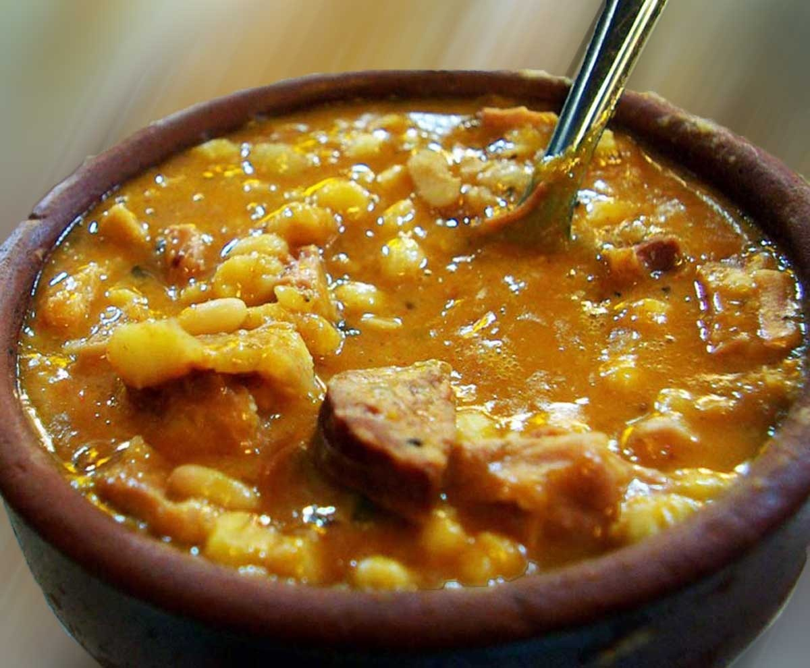

Locro

Description:
Locro (from the Quechua ruqru) is a hearty thick squash stew, associated with Native Andean civilizations, and popular along the Andes mountain range. It's one of the national dishes of Peru, Bolivia, Ecuador, Chile, Paraguay and Northwest Argentina.
Ingredients:
- 1 cup of dried white corn (hominy)
- 2 medium white onions, chopped
- 2 cloves of garlic, finely sliced
- 1 leek, finely sliced
- 200g thick-sliced smoked bacon (panceta salada), cubed
- 2 slightly spicy sausages (chorizo de cerdo), sliced
- 2 1-inch thick steaks of stewing beef, osso buco, cuadril or similar, cubed
- 1 cup tripe (mondongo – optional!), diced
- Pigs feet (patitas de cerdo – optional)
- 1 cup lima beans (porotos pallares, optional)
- 1 teaspoon ground cumin
- 1 teaspoon sweet paprika
- Ground black pepper and salt to taste
- 1 cup butternut squash (zappallo anco), cubed
- 1 cup sweet potato (batata), diced
- 1 large potato
- Chopped spring onion (green onion, cebolla de verdeo) for garnish
Steps:
- Soak the dried white corn in at least two cups of water, at least for 12 hours – preferably overnight.
- In a large, heavy-based pot cook the onions, garlic, leek, stewing beef, sausages, pigs feet and tripe if you’re brave, and bacon in a little vegetable oil until the onions are translucent. Add the cumin, paprika, a little salt, and freshly ground black pepper.
- Cook, stirring occasionally, for 10 minutes. Add the white corn kernels and then add enough hot water to cover the ingredients by about 2 inches.
- Add the vegetables and the lima beans, if using. Bring the whole thing to a boil, reduce the heat, cover and simmer for around two hours. Check the pot every 20 minutes or so and stir.
- After two hours remove the pan lid and continue to cook over a low heat. Remove the bones. Mash the vegetables slowly, and as the starch gets released the mixture will thicken into a stew. Continue mashing and cooking until you have achieved a rich, thick consistency. Add a little more salt to taste.
Return to main page.